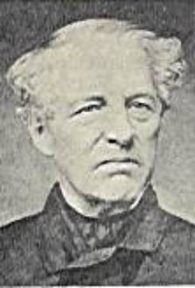

For more complete information on 19th Century Military Drill, visit the main page.
Cooper's Volunteer's Manual
A
CONCISE SYSTEM OF INSTRUCTIONS AND
REGULATIONS
FOR
THE MILITIA AND VOLUNTEERS
OF THE UNITED STATES,
COMPREHENDING
THE EXERCISES AND MOVEMENTS OF
The Infantry, Light Infantry, and Riflemen;
Cavalry and Artillery:
TOGETHER WITH
The manner of doing duty in Garrison and Camp, and the
forms of
PARADES, REVIEWS, and INSPECTIONS,
As established by authority for the government of the Regular Army.
_____________________________
PREPARED AND ARRANGED BY
BREVET CAPTAIN S. COOPER,
Aid de Camp and Assistant Adjutant General,
_____________________________
UNDER THE SUPERVISION OF
MAJOR GENERAL ALEXANDER MACOMB,
Commanding the Army of the United States.
________________________
PHILADELPHIA:
ROBERT P. DESILVER, No, 255 MARKET STREET.
_______________
1836

General Samuel Cooper, CSA.
Samuel Cooper, the highest ranking general in the Confederate army, never held a field command. He was most noted as the adjutant-general of the CS Army, a post he had held with distinction in the pre-war Us Army.
In his younger years, in 1836, Cooper served as aide-de-camp for Alexander Macomb, Commander of the U.S. Army. Macomb was assigned the task of compiling a volunteer and militia handbook, to simplify the manuals then in use, and render the information understandable to the volunteer officer. Macomb set his young aide to work on this task
The result is posted here. It is an invaluable tool for the reenactor who wishes to understand pre-war tactics. The work is now complete. I particularly recommend the Regulations section, as a clear rendition of the essentials, particularly in posting guards and sentinels.
This transcription could not have been made by your webmaster without the generous loan of an original copy from the collection of Alden Whyte. Thank you, Alden!
Like what you find here? For more complete information on 19th Century Military Drill, visit the main page of